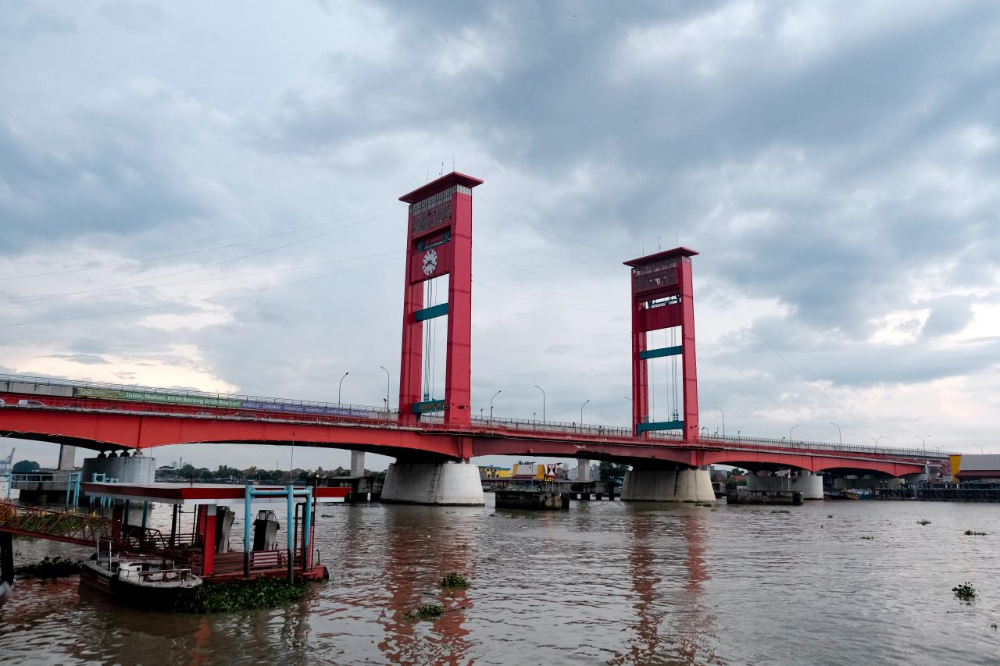
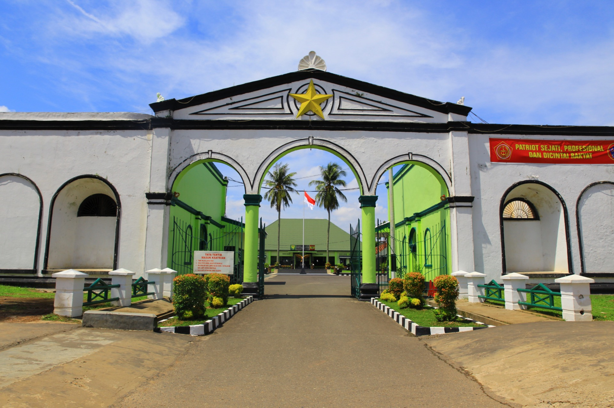
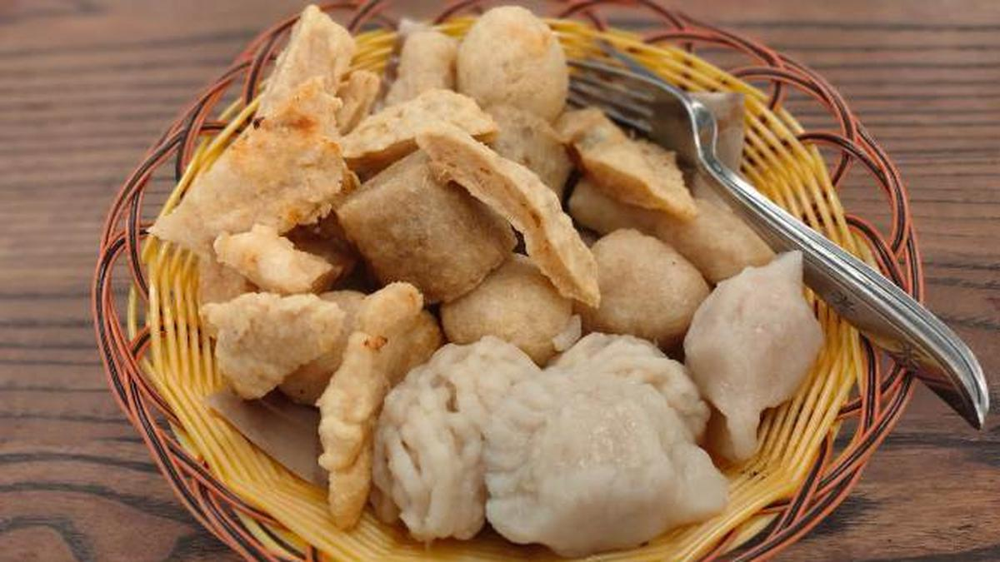
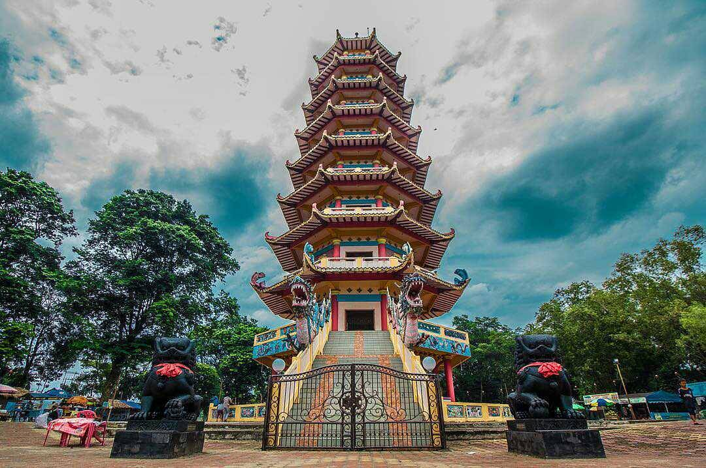

Jembatan Ampera
Jembatan Ampera adalah tempat wisata di Palembang yang terkenal dan Instagramable, sekaligus menjadi ikon dari Kota Palembang. Lokasinya berada di Jl. Mayjen. H. M. Ryacudu.
Pasca pelaksanaan Asian Games 2018, jembatan ini telah dibenahi, sehingga semakin terlihat keren dan modern
Benteng Kuto Besak
Benteng Kuto Besak adalah tempat wisata bersejarah yang merupakan peninggalan dari Kesultanan Palembang. Lokasinya terletak di Jalan Sultan Mahmud Badarudin, 19 Ilir, Kecamatan Bukit Kecil, Kota Palembang. Menurut buku Khazanah Kota Palembang karya Syarifuddin, dkk, Benteng Kuto Besak dibangun pada tahun 1772 dan baru diresmikan pada 23 Februari 1790.
Saat ini, area Benteng Kuto Besak menjadi salah satu titik daya tarik warga kota Palembang dan juga wisatawan.
Kuliner Pempek
Pempek adalah kuliner khas Palembang yang terbuat dari campuran ikan dan tepung sagu, disajikan dengan kuah cuka yang asam, manis, dan pedas, memberikan cita rasa yang khas dan menggugah selera. Hidangan ini memiliki berbagai varian, seperti pempek kapal selam, lenjer, dan adaan.
Pulau Kemaro
Pulau Kemaro terletak di daerah industri, yaitu di antara Pabrik Pupuk Sriwijaya dan Pertamina Plaju dan Sungai Gerong. Posisi Pulau Kemaro adalah agak ke timur dari pusat Kota Palembang
Pulau Kemaro identik dengan kota Tiongkok dan masyarakat Tionghoa serta adat istiadat dan kehidupan asli masyarakat Palembang. Daya tarik wisata sejarah yang ada di pulau Kemaro berupa adanya peninggalan-peninggalan sejarah (Pagoda berlantai 9, Makam putri Sriwijaya, Klenteng Hok Tjing Rio, Kuil Buddha, pertunjukkan kesenian, dan ritual keagamaan khususnya umat Tridharma)